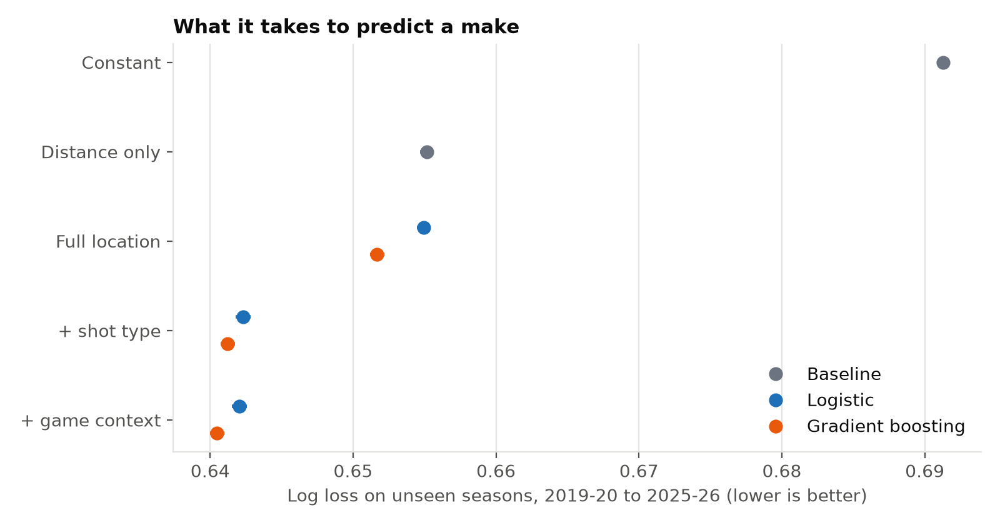
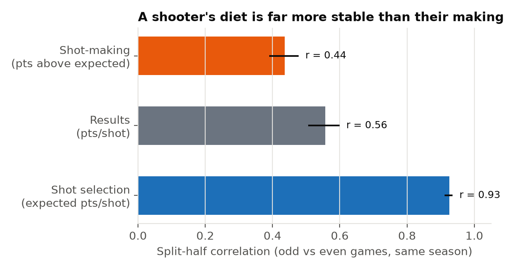
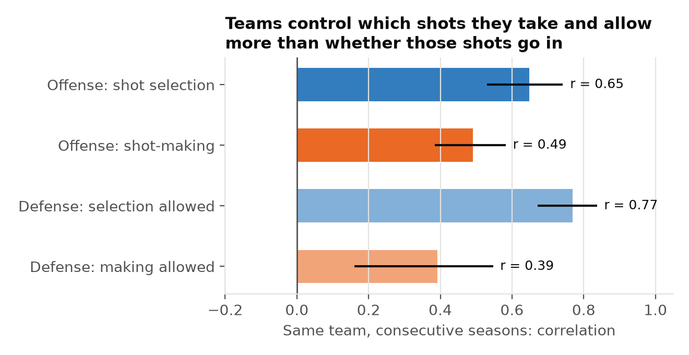
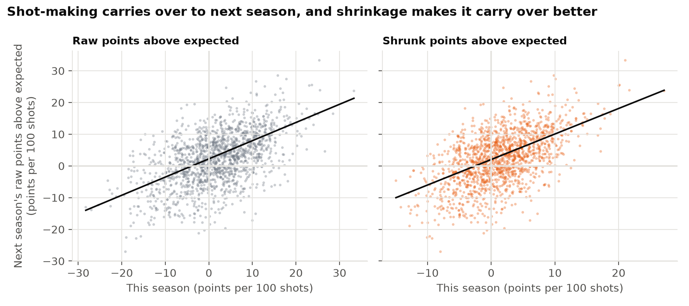

An expected-make model validated on unseen seasons, then three questions for a front office: how much shooters differ at making shots, whether it lasts, and what teams control.
1,897,373 regular-season field-goal attempts from 2017-18 to 2025-26 (NBA Stats play-by-play). Inputs are shot location, shot type and game context. The model is tested on seven seasons it never trained on (1.47M shots).

Held-out log loss by information layer, pooled over 2019-20 to 2025-26, with 95% game-bootstrap intervals (narrower than the dots).

Odd vs even games within a season, 2,305 player-seasons with at least 200 attempts. 95% player-bootstrap intervals.

Same team in consecutive seasons, 180 pairs. Defensive selection-allowed exceeds making-allowed by 0.38 (95% CI 0.21–0.60).

1,545 consecutive player-season pairs. Shrunk shot-making predicts next season's better than raw (weighted MSE 0.0042 against 0.0054) and better than assuming no skill (0.0072).
Results hold with location-only expected makes, which avoid scorer-assigned shot-type labels (the two shot-making estimates correlate 0.96), and with shot-making centered within each season. Public data have no defender positions, so part of measured shot-making is shot quality the data can't see, which may favor bigs and players who get open looks. Tips and putbacks have no charted location after 2020-21.
Data: NBA Stats play-by-play via the sportsdataverse project. The data belong to the NBA; used for non-commercial research; raw data not redistributed. Not affiliated with or endorsed by the NBA.